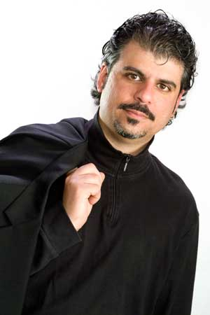

Jester-Knight
Literature
Film
Music
Visual Art
Tributes
Submissions
Links
Contact
Playwriting | Poetry | Lit | Jester-Knight | Essays
Mindmaps | Sutras | Resumes | Photo Gallery | Minor Confessions

Playwriting
Playwright-in-Residence, Youth Stages, LLC, Princeton, NJ (April 2006–)
Playwright-in-Residence, New Mystics Arts, WV and NJ (August 2004–)
Published Plays
Two Marys, Five Jacks and One Very Big Shoe (A Clever Retelling of the Rhymes of Mother Goose)
Published by New Plays in Aug. 2004. Now available through Dramatic Publishing. Commissioned and produced by Youth Stages, LLC. Half-hour touring production for preschool thru 2nd grade, currently touring NJ on an ongoing basis under the auspices of Young Audiences of New Jersey. Two Marys... has been performed in NY, NJ, VA, PA, OK, and GA.
A Fitness Carol: A play about health and fitness originally produced by Accompany Publishing, Minneapolis, MN in 2007. Now available through Dramatic Publishing. A Fitness Carol has been produced in CT, FL, IN, MO, TX, MD, MN, VA, NV, RI, IA, and Nova Scotia.
Produced Plays
[For more information or samples of any of these plays, contact the playwright at joey@newmystics.com]
I wrote the book for The Think it Thru Review, a musical promoting teen pregnancy prevention that opened in Phoenix, AZ in Sept. 1998 and toured the country until mid-2001. The musical has received special recognition from the American Medical Association and former Pres. Bush’s Thousand Points of Light program, and received a Phoenix Kids Choice award.
Rewritten without music as the play Thinkin’ it Over in 2005. Currently produced and toured by New Mystics Arts, Inc.
6 Reasons to Say No: A play about teen alcohol and drug abuse commissioned by New Mystics Theatre Company, debuted April 2007. Now touring as 7 Reasons to Say No.
Genies, Lamps, and Dreams: Tales of the Arabian Nights, commissioned and produced by Youth Stages, LLC. Half-hour touring production for preschool-3rd grade. Debuted Dec. 20, 2004. Touring under the auspices of Young Audiences of New Jersey.
Aesop and the Bully, commissioned by Youth Stages, LLC. Debuted in Autumn 2006. Still touring.
The Other Sherlock Holmes in the Hound of the Baskervilles - touring script for Institute of the Arts, Reading , PA. Debuted August 2009.
King Midas and the Best Holiday in History: commissioned by Institute of the Arts, Reading, PA. Debuted November-December 2008.
To Be Produced (2009 - 2010)
Little Red Riding Hood - a participatory play for 3-5 year olds (who collectively play the title character) commissioned by Youth Stages, LLC, Princeton, NJ (debuts Sept. 2009)
Voices of Violence - a collection of short plays, performance pieces, monologues and vignettes commissioned by New Mystics Arts, Inc. (to debut January 2010)
A Jungle Jazz Adventure (working title), a jazz and participatory theatre piece for youth - commissioned by Institute of the Arts, Reading, PA (to debut March 2010)
Scenes from a Deep Dream River, a play for middle and high school students - Winner, AATE Unpublished Play Reading Project; staged reading at 2004 national conference (July 30, Salt Lake City). Winner, VSA Wordsmith Contest, 2005; staged reading at Capestro Theatre, Edison, NJ (January 22).
I have also written and cowritten with my students nearly 20 plays and performance pieces that have grown out of improvisational workshops. All of the plays were performed at the end of the workshops. I have also written numerous adaptations of classic fairy tales and myths.